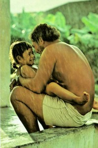
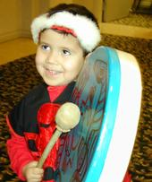

Psychogenetics
by David Griscom
“What more profound gift could we give than to restructure our DNA so that all humans inherit health, peace, and relationship of the highest resonance”?
I was sitting in a group of eight young people from around the world who were preparing to leave on a journey to the North Pole as part of a project called Pole to Pole 2000. It was created by my friend Martyn Williams, who is a world-renowned explorer and expedition leader to both the North and South Poles. He envisioned gathering a group of strong young people who would travel from one pole to the other, on a mission to secure promises from as many groups and individuals as possible to protect Mother Earth and seek peace in all aspects of life.
Eight beings from seven countries came together to answer the quest. They were from the ages of 19 to 27 and each one seemed a bright and shiny star. As I watched their interaction, I could see the hope of the future. They were so willing to reach beyond the limits of language and culture to touch each other and bond into a cohesive unit, furthering the purpose of their mission.
Yet again and again I observed how the mind entrapped them and blocked their capacity to grasp the intangible. I saw the spectrum of how familial and cultural programming lay the bases for mental rigidity in which the mind perceives anything new as a proof test or abstract concept and cannot allow the experience of it as evidence or possibility.
I am struck by how polarized we all are in terms of our minds and how this closes us off from the rapture of fully conscious experience. If we deny the mind’s ability to envision and therefore experience directly through its sensory faculties, our world will remain a closed circuit that will eventually atrophy. Humans have been gifted with more than 70 senses with which to embrace life, yet we have diluted its thrill and richness by detouring all perception through the mind.
We have not served ourselves as humans by identifying truth through our limited intellectual, rational minds. The very definition of intellect is the capacity to problem-solve and discover the purpose or the workings of unexplained new phenomena placed before us. However, we have interpreted it to mean nothing more than the assimilation of only a certain stratum of information, rather than the correlation of data from almost infinite aspects, that impinge upon each other to create a complex reality which necessitates holographic thought to comprehend.
In so doing, we have begun to weed out the very quality of mind that is vital to our next evolutionary step. Without the “higher mind” that encompasses holographic awareness, we cannot possibly access the random chaos that synergistically precipitates cosmic manifestation. In short, we will trail behind too slowly to interact with the forces of change.
The Pole to Pole team entitled their presentations, “Challenge to Change.” We think of change in terms of attitudes and awareness about our world, but they are actually external measures that are somewhat secondary in effect. We must change from the inside out, in the same way the body heals itself. The answers to our environmental and global issues are not just in new approaches, but in completely revamping our experience of being human!
As we expand our consciousness into holographic awareness, we will embrace new thought patternings that link perception to cause and effect, action and reaction, and clear the way to a new kind of intelligence. It will be inclusive of beingness and Soul as holding the answers to life’s greatest secrets and challenges.
I feel that we are evolving a new brain that will serve these functions. The frontal lobe corresponds to emotional perception and it is through these channels that our intelligence and caring for others will develop new facets of human potential. The dolphins and whales use their frontal lobes as sonar connectors to perceive holographically. They have a special fluid in their frontal lobes that creates the resonance for such incredible transmissions.
We, too, have brains that are more than 85% water, and we can learn to utilize the conducting capacity of water to augment our perception. We know that the dehydration of the body and brain is the major cause of aging. By simply nourishing our brain with water so that it doesn’t become dried out, we can avail it of the highest human potential for consciousness.
Imagine that you are washing your brain. As you envision holding it under a waterfall or in the sea, imagine that all negativity and toxicity are being drained out. Then image your brain brimming with fluids, juicy with the water that conducts brilliant illumination and intelligence.


Our educational systems have been based on interjecting as much information into students as possible. It may be that these next several generations will be attempting to interject information into us! They are being born into a world that will expand beyond our present scope of reality and we must find a way to help their minds cope with new information that we, ourselves, may not be able to grasp.
Our children desperately need to learn how to trust their own inner voice so that they are not overly swayed by the unbalanced influences of the media and their environment. The educational format will necessitate a complete change in purpose and application to meet the needs of the future. To that end, I founded The Nizhoni School for Global Consciousness, whose carefully designed curriculum is focused on awakening a profound sense of self and the deepest knowing of each individual, so that at any age the student feels a part of our complex world. It is a “Soul-centered” form of education that encompasses the conversation of “Who am I?” and “What do I have to give to my world?”
I teach a course called “Themes of Humanity,” in which we explore global themes that are part of our collective consciousness. Love and power, fear and hate, death and God are all subjects that shape our cultures and define our world. We begin to discover that our inner conversations are echoed out across the seas and touch all other humans. Through this exploration we can actually experience how it is that we are one global family.
We might ask ourselves which “Themes of Humanity” most affect our global relationships. I would begin with Religion, as it has done more to separate us and create wave upon wave of hateful vengeance than any other theme. The pretext of fighting for our God and destroying others because they have their own God has embittered whole cultures against each other. To use God to justify the plundering and stealing of others is the gravest of human travesties. All religions must accept responsibility for their part in luring their worshippers into this despicable fray. The epic of such folly is over. We individuals must stand our ground, both to governments and churches that would draw us into wars that are the antithesis of all Divine teaching.
If we could release the mental entrapment of religious programming, we could embrace all forms of worship chosen by our cousins and friends. Our collective experiences of God or the Divine force would only enhance and enrich embodiment, rather than provide any kind of wedge between ourselves as humans.
The spiritual focus on the Divine is the truest and most powerful force to bring humanity together, not to alienate us one from another.
Our sense of fear and separation stem from learned belief systems, not from actual spiritual experience. Back in the shrouded beginning of religious expression we were imprinted with the concept of the “angry God” who had to be dissuaded from wrathful vengeance upon mankind for their imperfection. This resulted in the ritualistic practice of sacrifice to appease God.
I can truly imagine how easy it might have been for a priesthood that overstepped the boundaries of directing others’ lives to fall into the trap of blaming their behavior for any mishap that befell the group. How convenient to say that God is angry and we must pay by suffering. This concept has buried fear and punishment deeply within the human psyche and into the spiritual DNA.
It is not God who is angry with us; it is nothing more than an effective manipulation that allows the few to control the many. Virtually every type of authority has used this technique to harness in its constituents-from priests to police to parents. The goodness in us needs to be allowed, without coercion. The era of martyrs, sacrifice, and punishment is over. It is time for us to realize that we can give a holy gift without taking a life or inflicting pain upon others or ourselves. We can instead celebrate the sacredness of life as Divine expression. Healing this global rift must begin with individuals who are willing to risk opposing the subtle coercion of society, in order to teach their children a kinder way.
Ask your Higher Self to show you the exact point on your Spiritual DNA where the thought form that God is an angry God is entwined. Ask you Higher Self to show you the brightest whitelight frequency that will remove the thought form. Laser that light into the point on your DNA and erase itcompletely. Take a deep breath and feel the divine love that can touch you once you are not locked into the fear and punishment of the angry God myth!
Thank you, my friend, for doing this. It will make a difference to all our futures.
The incredible spewing of human hatred, separation and violence on our planet right now is the result of an influx of higher energy that is affecting our DNA. The increased radiation, the sunspots, and the synchronicity of evolution are disrupting the sediment of ancestral imprints. The prophets of every culture have locked into this time frame and spoken of “brother against brother, tribe against tribe.” It need not be that way!
Like a powerful centrifugal force, the altercation of frequencies is spinning the residues of human history out to the surface to be released. The tragic experiences of our forefathers have imprinted themselves into the fabric of our DNA for millennia and they must now be shaken loose. These old energies will destroy us if they are allowed to play out. We are not fighting with instruments of individual destruction; we are holding the entire globe for ransom with just one nuclear weapon.
Certain places on Earth are the focal points of eruption, but the seething is a tension that is pushing the genetic strands of all humanity. There are no good guys and bad guys; there is only the lonely human looking for the safety of home and family.
It is difficult for us to take responsibility for the “unspeakables” of others, but until we do, we will not emerge from this shadow land of the past. There is a way to take responsibility without faltering under the burden of the past. It is to be responsible for making the changes so that we do not return to the past, to lift us so that we are freed of the illusions and transgressions that have caused such suffering.
No one on the planet is further away from you than your 44th cousin. Your genetic material is part of a global fabric and you are a conglomerate of the fibers from all the different families and races woven together within our species. Whatever your ancestors were involved in, mine were right there with them. Neither you nor I want to claim any part in these terrible things, but in our deepest recesses we are part of them. We have inherited them — and only we can heal them!
By searching out those hidden hatreds, you can dissolve them from your DNA so that your children’s children will not carry the seeds of human frailty. When you come upon the historic events in the lives of your ancestors, you can discover the compassion that arises from knowing what caused the killer to be a killer, or a conqueror, or a victim.
From a spiritual perspective, you do not need to justify or defend their deeds, but rather, realize how you can change all humanity by releasing the vicious circle of repetition. By sifting through your family’s history, you will be sifting through mine as well. I profoundly thank you for that.
Through the portals of global inheritance, we will emerge as a collective entity. The human genetic pool is really quite small and alterations in one group affect the larger whole. We are conglomerates. Just as all the organs come together to make one body, our human family is bound together genetically and all members contribute to the whole. Through our consciousness, we can begin to redefine what it means to us to be so alike.


The change of heart that allows us to reconnect to other humans often occurs when some tragic event interrupts our monologues of judgement and we experience compassion for others suffering while at the same time the profound gratitude that we have been spared the same fate. The goodness of humanity comes into play and we want to extend ourselves to those who are in the throes of what we are so grateful to have escaped.
We are about to discover that in fact, “what happens to you, happens to me”. Any profound experience of one group or one place ripples out across the psychogenetic airwaves and triggers a corresponding response in others, even though they may be completely unaware of the connection.
Mother Earth is giving us an excellent example of how this works. The pulse of pollution is not hindered by any preemptory human notion of national boundaries. In the past we might have been simply annoyed by some pollutive act of a neighboring state or country, but now we are faced with the frightening evidence that environmental indiscretion affects us all. There are no innocent bystanders; we are all in this together.
We have discovered that a nuclear explosion in Russia or in the South Pacific islands has invasive powers extending to completely opposite sides of the world. The rain forest cut in Brazil affects weather patterns across the globe. Nature herself has tricked the humans into becoming aware of how important it is to enter into communication with each other. She is teaching us that the most important of our conversations is the conversation of our place in the planet as a whole.
The great oil spills that have poisoned our seas and the nuclear accident at Chernobyl have left no doubt about our common fate in the event of careless human actions. There has been some good that came from all this adversity. Humans have reached across the abyss of differences and helped each other. Through our cooperation, we have learned respect and caring. These seemingly isolated acts of teamwork are preparing us for the inevitable future of a global family.
Personally, I suspect Mother Nature of plotting the whole drama in order to teach us how to get along. In the end, if humans can’t get the basic game plan, she will simply remove us. Time is on her side. Change is her yardstick.
As the world shrinks into a global neighborhood, we are becoming excruciatingly aware of each other’s daily realities. We can hardly turn our backs on hunger, disaster, or war. It would be impossible to pretend we do not know about events in other parts of the world now that we have instant satellite reply.
My students at the Nizhoni School actually use their intuitive skills to read world events from a precognitive level. Our bodies are like Geiger counters that measure changes in earth movement, atmospheric pressure, and even human violence. The Nizhonies then tune into the feelings and respond by extending color to that place or people where the specific event is occurring.
I discovered many years ago that about 24 to 48 hours before an earthquake, my body would begin to “slosh” in a certain way that made me feel almost sick to my stomach. It was a very reliable measure of seismic activity. Many people experience various kinds of physical phenomenon in response to the Earth. It is interesting that the seat of the emotional body is the solar plexus. That is the area of your stomach and umbilicus. The solar plexus nerve ganglion interprets incoming distress signals-whether they are the instability of Earth or fear coming from another person, and directs them to the brain via the vagus nerve that solicits the reaction pattern.
Our psychogenetic pathways initiate us into realities sculpted by emotional currents. It is imperative that we learn how to use them to link us to each other and to all of nature’s life forms. All humans experience the same range of emotions; the laughter, tears, passions, and peace are the currency of life’s exchanges between families and communities.
The greatest gift of humanity is to experience the power of emotion, the power of the human heart. The difficulty is that our relationship to our Emotional Body is one of anxiety and longing, rather than the conscious energy of our higher emotions that would link us to states of absolute grace. Humanity is pushing up against a silent wall that hides the infinite cosmic love whispering gently to us from across the veil. We know that it is there, yet we cannot find a way of experiencing it personally. We have forgotten the oneness of our Soul and thus we translate all experience into personal ownership. We attempt to extract it from our relationships and cannot conceive of it as a force shared by all humans, but it is! This is one of our global mandates that we will answer to in times to come.

This whole planet is in a process of transmutation. We ourselves are mutants. We must recognize who we are without fear, and come to the great cosmic play with the ecstasy and pleasure of joining in with the creative force. Every genetic mutation brings about the opportunity for the kind of genetic illumination that becomes the guiding force of evolution.
There are exquisite new frequencies available to our global family. Peace is an energy that has not been present on our planet since before recorded time; perhaps only known in group to the light beings and angelic realms. At Nizhoni we say, “Peace is a choice.” We are suggesting that the vibration of peace could become a crescendo that builds from individual voices to a collective harmonic orchestration. Once we choose peace, we must learn how to activate it at will and how to live it. Inner peace is the beginning point. It is not something we need wait for someone-else to bring to us; it is there within each of us.
In the past we have felt that peace was a state of mind that could only be achieved through aloneness. Now is the time for us to learn that it is something we can share with others through our own peaceful essence. Peace is not really a static force; it is an essence energy that is born of our spiritual DNA. Not only can we access our inner peace, but we can entrain it within our genetic matrices so that it will be inherited by our successors.
Peace has many facets and you can perceive it in many different ways. Each time you do an exercise in consciousness to access it you may experience it differently.
Ask your body where it is holding the energyof inner peace at this moment.
Bring your consciousness into that place in your body and allow yourself to be encompassed by peace.Imagine that the energy you experience is flooding through your entire body. Envision it being imprinted within “the mind of the cell”of the trillions of cells in your body.
In the same way that you can laser radiant white light into your DNA to alter or activate a quality, you can initialize the point of peace at its DNA site and initiate a lineage of peaceful global beings. Every time you use your consciousness to bring forth a peaceful state, it will be carried out over the ethers, across the planet and even out through our atmosphere.
All of our thoughts and actions are seeding the next ripple of humanity in the same way that the thoughts of our ancestors seeded us. Have you ever considered that the brilliance of the world’s greatest beings is available to you through the collective pathways of global inheritance?
The great thinkers, musicians, scientists and healers have left us the legacy of their breath and their consciousness. All we have to do is tune in to the frequencies that support those energetic qualities to begin receiving the inspiration they model for us. Every person you admire serves as a blueprint that you can adapt to your own psychogenetic design.
Contemplate your highest attributes and qualities. What is the most wonderful thing about you? Are you compassionate? Do you really love people? What would you want to extend to the world? Imagine that you are sending these energies out to seed the planet.
We are a Soul group that has chosen each other and this pivotal timeframe to bring about the changes that will secure a place in the future for us all. It is essential that we begin to think of ourselves as the family of humanity.
What will be the fate of humanity? We are creating it now.
We are the ones setting up the encoding for future generations who are coming towards us now in the same way that light is coming towards us from the cosmos at this moment. It will make it easier to feel that we can give to others when we are able to experience that we are receiving new energies ourselves from the highest source. The light awakens our consciousness, our embodiment and our soul.
Filed under: Divine Template and
Leave a Reply